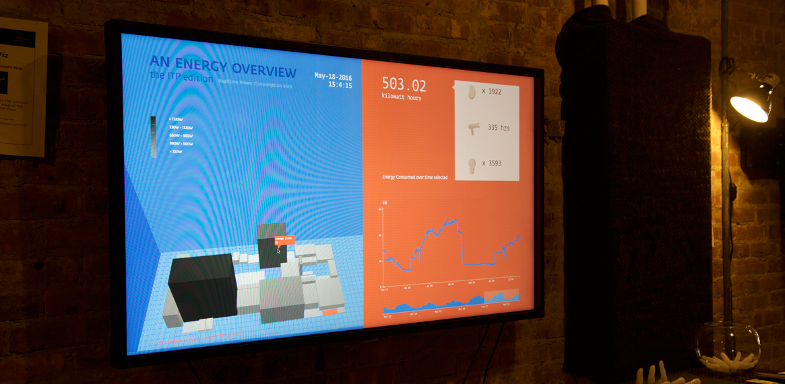
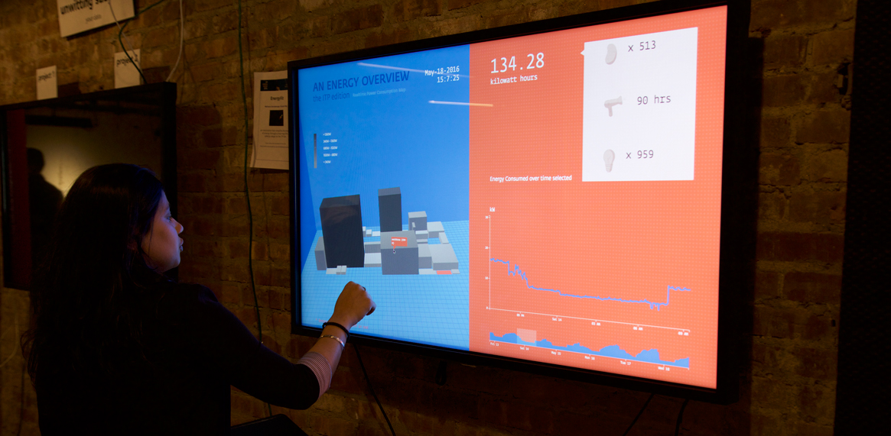
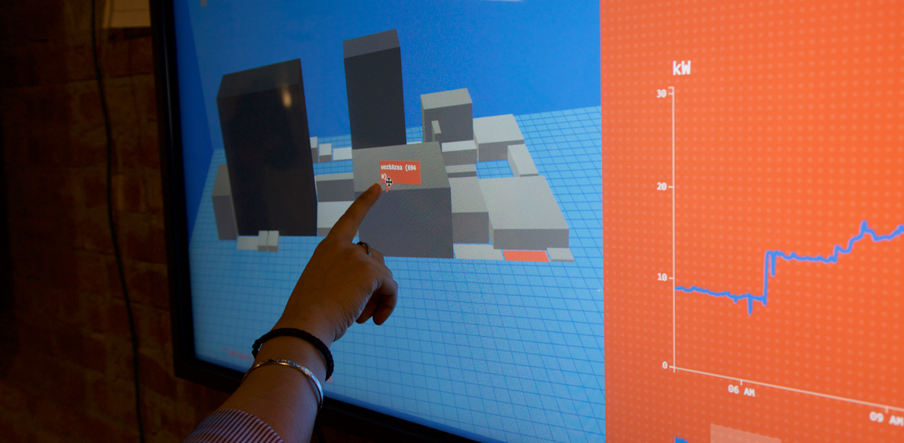
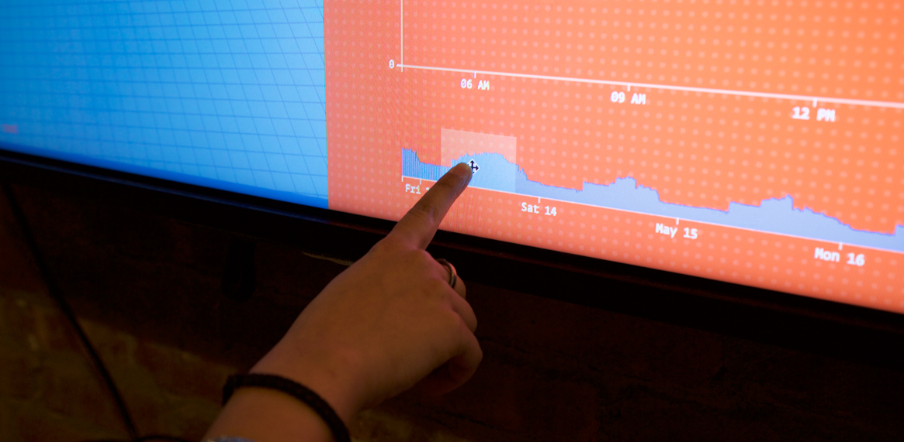
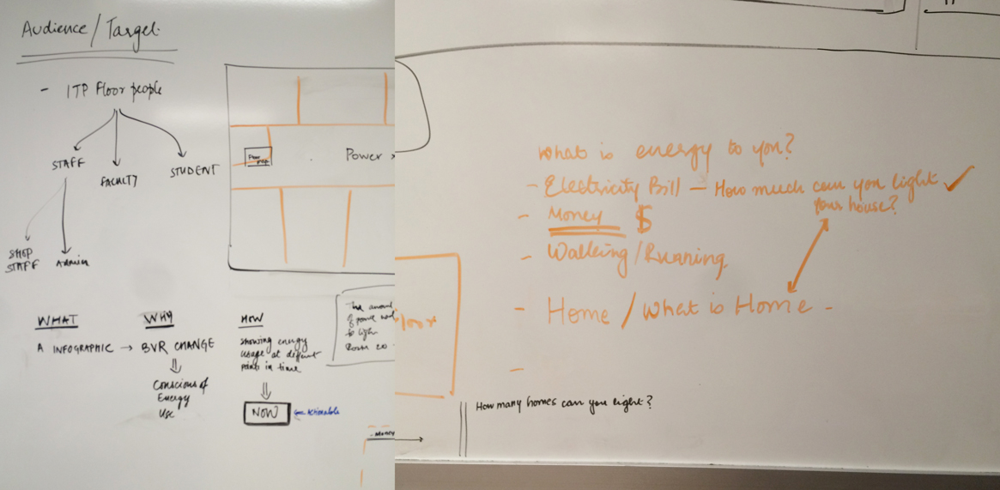
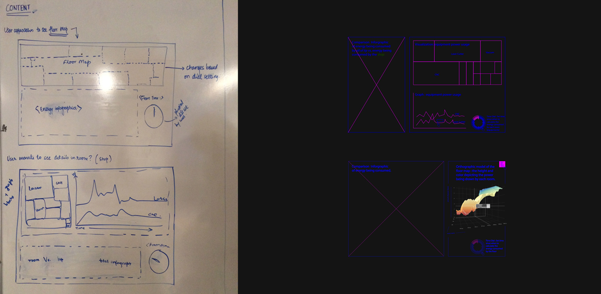

A set of tools to inspect the energy consumption at the Interactive Telecommunications department at NYU. We built a dashboard that explains the energy consumption by the 4th Floor of Tisch School of the Arts, both realtime and over the past week. This project was exhibited at the ITP Spring Show in 2016.

The aim of this is two-fold - to make people aware of the energy that is being consumed per room/per equipment, and to contextualize energy as a fun and tangible concept. The data for this was obtained from Enertiv, an energy monitoring service.

The aim of this is two-fold - to make people aware of the energy that is being consumed per room/per equipment, and to contextualize energy as a fun and tangible concept. The data for this was obtained from Enertiv, an energy monitoring service.

The aim of this is two-fold - to make people aware of the energy that is being consumed per room/per equipment, and to contextualize energy as a fun and tangible concept. The data for this was obtained from Enertiv, an energy monitoring service.
The aim of this is two-fold - to make people aware of the energy that is being consumed per room/per equipment, and to contextualize energy as a fun and tangible concept. The data for this was obtained from Enertiv, an energy monitoring service.

Process // Initial Brainstorming

Process // Wireframes